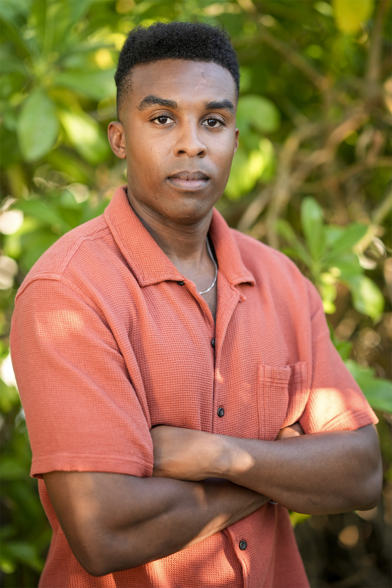
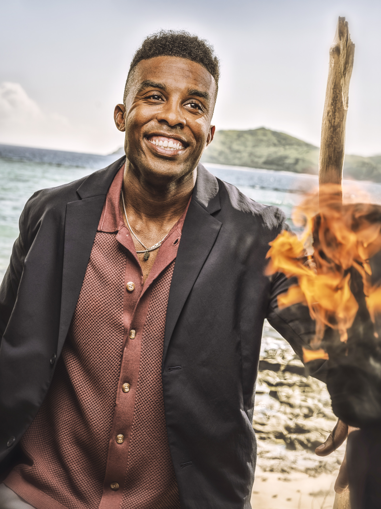

Kyle Fraser
Vatu Tribe
Age
32
Previous Season
48 (Winner)
Status
Eliminated (Medical Evacuation, Episode 1)
Finished
23rd / 24

Season 48

Season 50
About
Kyle Fraser is the Sole Survivor of Season 48 and one of three winners on the Season 50 cast. Only a couple of weeks after his win aired on TV, Kyle was back in Fiji for his second season. Despite being a winner, he found himself in a surprisingly strong position on the Vatu tribe, forming a tight alliance with Genevieve Mushaluk, Colby Donaldson, Stephenie LaGrossa, and Q Burdette. Kyle joined the Survivor club of two-time players who have never been voted out of the game.